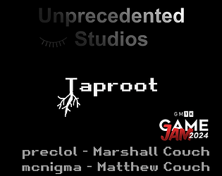

Sunset Arena

Dive into Sunset Arena, a synthwave-fueled party game that turns your Steam Deck into a glowing coffee table arcade. Challenge friends in a fast-paced, top-down shooter where a single joystick is your ticket to glory. Inspired by retro arcade cabinets, this casual gem brings the party wherever you go. With just one Steam Deck, duel a buddy or up to 8 players with 4 controllers. Prefer couch vibes? Switch to Couch Party controls and battle with 4 players, 4 controllers with full twin-stick control. Mobile Device controls allows you to connect your phones as controllers for up to 8 people—you'll never be a controller short again. Auto-aiming single-stick or classic twin-stick options making it easy for anyone to jump in and dominate. Customize your ride, snag power-ups, and derezz opponents in a neon-soaked battle for bragging rights. Arcade thrills, modern twists—plug in and play!
Other Projects
I'm always doing some experimenting with some unique ways to play games. You can find small projects and game jams on itch.io or you can find some of my prototypes on github.
Taproot is a game I recently built with my brother for a game jam with a theme of scale.
Jokers and Pixels is a prototype of taking a more board game approach to party games. I like board game vibes, but I want them in my Steam Deck.
If you are into Catchphrase or Taboo, try out Don't Say The Word. It's made to be played on a phone.
If you like the idea of a Steam Deck being a coffee table arcade cabinet check out Steam Deck Mini Games, the prototypes where I explored the concept before making Sunset Arena.
If you like Jackbox and want more games where you use your phone as a controller (and you've already bought Sunset Arena...) check out Sunset Party. This is the proof of concept I made to test the idea of phones as controllers before adding it to Sunset Arena.
About
Unprecedented Studios was founded by Marshall Couch. I've always felt that there aren't enough party games in the world. My favorite gaming experiences have been at lan-parties, on couches playing with friends, and games on the playground. I love the experience of gaming with others especially when it's in a shared space.
Pokémon was the first game that really drew me in when I was around 8 years old. Being able to connect Gameboys with a link cable to trade and battle was incredible. Playing on the metaphorical playground with friends has shaped the game experiences I want to have and create.
My family loves to play board games. A big part of family vacations and holidays when I was growing up were the board games we played. When I was younger, it was often the same board games that were our "family games," but as the board game scene has grown, so have our family adventures. The real reason I’m making games is selfish: I’m making them for my family. I’m creating the games and experiences I want to have with my loved ones. I’m releasing these projects because I’m sure there are more people out there like me.
I'm working on some ideas that don't seem to exist out there yet. Be on the lookout for some new twists on classic ideas.